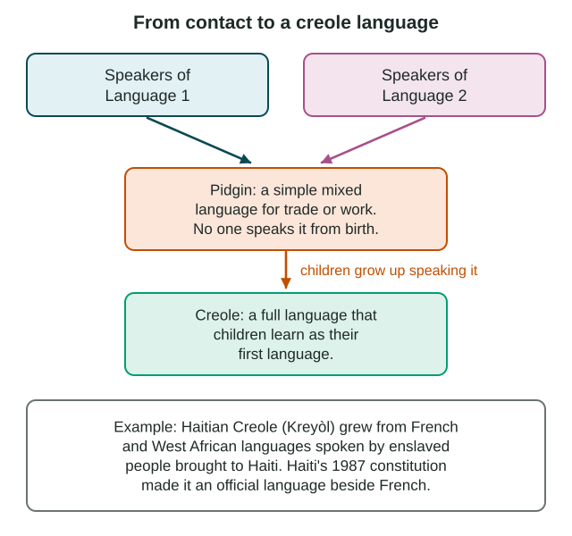

Historical Causes of Diffusion
Long before the internet, trade, colonialism and imperialism moved culture across the world.
Part 1 · Hook
Why this matters
Part 2 · Before you start
What this builds on
Part 3 · Prerequisite check
Quick check before you start
1. Irish migrants bring Saint Patrick's Day parades to Boston. What kind of diffusion is this?
- Relocation diffusion
- Contagious diffusion
- Hierarchical diffusion
- Stimulus diffusion
Show the answer
The trait moved with the people who moved, which is relocation diffusion.
- Correct: Relocation diffusion:
- Contagious diffusion:
- Hierarchical diffusion:
- Stimulus diffusion:
2. An idea spreads to a new place, but people change it to fit their culture. What kind of diffusion is this?
- Stimulus diffusion
- Relocation diffusion
- Contagious diffusion
- Hierarchical diffusion
Show the answer
Stimulus diffusion spreads an idea that is changed on arrival.
- Correct: Stimulus diffusion:
- Relocation diffusion:
- Contagious diffusion:
- Hierarchical diffusion:
Part 4 · See it
See it first

Part 5 · Step by step
How it works, step by step
- Merchants sail and walk long trade routesgoods, words, foods and beliefs spread between distant ports and markets
- Powerful countries take control of other lands (colonialism and imperialism)their languages, religions and laws spread to the places they rule
- People with different languages must work or trade togetherthey use a lingua franca or make a pidgin, a simple mixed language
- Children grow up speaking that mixed languageit becomes a creole, and cultures blending into new forms is called creolization
Part 6 · Key ideas
Key ideas
- Trade spread culture long before modern times: papermaking traveled west from China along the Silk Roads, and Indian Ocean trade gave Swahili many Arabic words.
- Colonialism is ruling another place directly, often with settlers. Imperialism is extending power and influence over other places by force, money or culture. Both spread languages, religions and sports, such as Portuguese in Brazil and cricket in India.
- A lingua franca is a shared language between groups with different home languages (Swahili in East African markets, English for international flights).
- A pidgin is a simple mixed language no one speaks from birth. Creolization is cultures mixing into a new form; when children learn a pidgin as their first language, it becomes a creole, such as Haitian Creole.
Part 7 · Misconception
A common mistake
The wrong idea: A lingua franca is the language most people in a place speak at home.
What actually happens: A lingua franca is a bridge language between people whose home languages differ. In an inland East African market, traders bargain in Swahili and then speak their own languages at home.
Part 8 · Check yourself
Check yourself
Exam-style questions. Anything you miss goes into your review queue.
Text
Swahili, a language of East African ports
Swahili on the East African coast (LevlPrep summary, 2026)
For more than a thousand years, ports such as Kilwa, Mombasa and Zanzibar traded across the Indian Ocean with merchants from Arabia, Persia and India. Swahili, a Bantu language of the coast, took in many Arabic words through this trade; its name comes from an Arabic word for "coasts." In the 1800s, trading caravans carried goods and Swahili inland toward the Great Lakes. Traders, porters and farmers who spoke different home languages used Swahili to bargain with each other. Kenya and Tanzania later made Swahili a national language, and people across East Africa speak it as a second language.
1. In the passage, traders with different home languages used Swahili to bargain. What does this make Swahili for them?
- A lingua franca, a shared language between groups
- A pidgin, because no one speaks Swahili from birth
- A form of folk culture limited to one village
- An example of ethnocentrism among the traders
Show the answer
a lingua franca is a language people with different home languages use to communicate, often for trade.
- Correct: A lingua franca, a shared language between groups: Right: a lingua franca is a language people with different home languages use to communicate, often for trade.
- A pidgin, because no one speaks Swahili from birth: Many coastal people speak Swahili as their first language, so it is a full language, not a pidgin.
- A form of folk culture limited to one village: The passage shows Swahili used across a large area by many groups.
- An example of ethnocentrism among the traders: Using a shared language to trade is not a judgment of another culture.
2. Which cause in the passage best explains why Swahili contains many Arabic words?
- The caravans that went inland toward the Great Lakes
- Centuries of trade with Arabian merchants
- Kenya and Tanzania making Swahili a national language
- Farmers far inland using Swahili as a second language
Show the answer
long contact through trade brought Arabic words into the language of the ports, a historical cause of diffusion.
- The caravans that went inland toward the Great Lakes: The caravans carried Swahili inland, but the Arabic words came from contact on the coast.
- Correct: Centuries of trade with Arabian merchants: Right: long contact through trade brought Arabic words into the language of the ports, a historical cause of diffusion.
- Kenya and Tanzania making Swahili a national language: That came much later and does not explain where the words came from.
- Farmers far inland using Swahili as a second language: Inland farmers learned Swahili; they were not the source of its Arabic words.
3. In the 1800s, caravans of traders and porters walked inland and took Swahili with them. Which kind of diffusion is this stage?
- Stimulus diffusion, because inland groups invented a new language
- Hierarchical diffusion, from small villages up to the coast
- Relocation diffusion, carried by people on the move
- No diffusion, because Swahili stayed on the coast
Show the answer
the language traveled with the people who moved inland along the caravan routes.
- Stimulus diffusion, because inland groups invented a new language: Inland groups learned Swahili itself; they did not build a new language from the idea.
- Hierarchical diffusion, from small villages up to the coast: The movement ran from the coast inland, carried by traders, not up a ladder of size.
- Correct: Relocation diffusion, carried by people on the move: Right: the language traveled with the people who moved inland along the caravan routes.
- No diffusion, because Swahili stayed on the coast: The passage says the caravans carried Swahili inland, so it did spread.
4. Based on the passage, a market town far inland where people speak several home languages would most likely use Swahili in which way?
- As the home language of most families in the town
- As a language heard on the coast but not inland
- As a written code used by merchants from Persia
- As a shared trade language
Show the answer
in a place with many home languages, Swahili works as a lingua franca for buying and selling, while families keep their own languages.
- As the home language of most families in the town: The passage says people inland speak Swahili as a second language, not at home.
- As a language heard on the coast but not inland: The passage says caravans carried Swahili inland, where people used it to bargain.
- As a written code used by merchants from Persia: Swahili is a spoken language of East Africa, not a code of Persian merchants.
- Correct: As a shared trade language: Right: in a place with many home languages, Swahili works as a lingua franca for buying and selling, while families keep their own languages.
5. What is the difference between a pidgin and a creole?
- A pidgin is written down; a creole is mostly spoken
- A creole mixes two languages; a pidgin uses one
- A pidgin is official in a country; a creole is not
- A creole has native speakers; a pidgin does not
Show the answer
a pidgin is a simple mixed language for contact that no one speaks from birth. When children grow up speaking it as a first language, it becomes a creole.
- A pidgin is written down; a creole is mostly spoken: Writing is not the difference. Both can be spoken or written.
- A creole mixes two languages; a pidgin uses one: Both come from mixing languages. What differs is whether anyone speaks it from birth.
- A pidgin is official in a country; a creole is not: Haitian Creole is official in Haiti, so this is not the difference.
- Correct: A creole has native speakers; a pidgin does not: Right: a pidgin is a simple mixed language for contact that no one speaks from birth. When children grow up speaking it as a first language, it becomes a creole.
6. Cricket is a major sport in India, Pakistan, Australia and Jamaica but is little played in Brazil or Mexico. Which history best explains this pattern at the global scale?
- The British Empire carried cricket to the places it ruled
- Cricket needs a hot climate, which Brazil and Mexico lack
- Cricket began in India and spread west to Britain
- Television in the 1990s spread cricket to these countries
Show the answer
Britain ruled all four of the first group of countries and brought cricket with it. Brazil and Mexico had other colonial rulers.
- Correct: The British Empire carried cricket to the places it ruled: Right: Britain ruled all four of the first group of countries and brought cricket with it. Brazil and Mexico had other colonial rulers.
- Cricket needs a hot climate, which Brazil and Mexico lack: Brazil and Mexico have hot regions. The pattern follows colonial history, not climate.
- Cricket began in India and spread west to Britain: Cricket began in England and spread through the British Empire.
- Television in the 1990s spread cricket to these countries: Cricket was played in these countries long before television.
Part 9 · Summary
Summary
Part 10 · Up next
What comes next
Part 11 · Connections